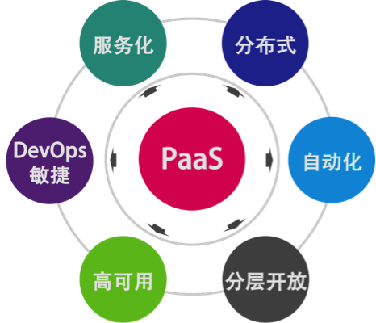
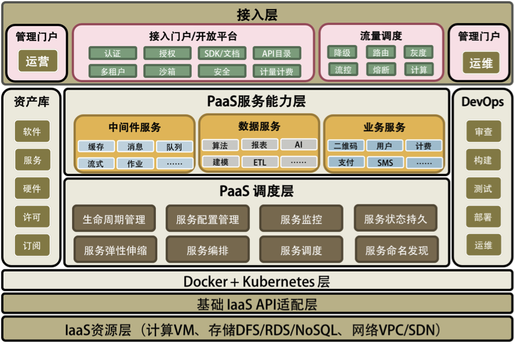
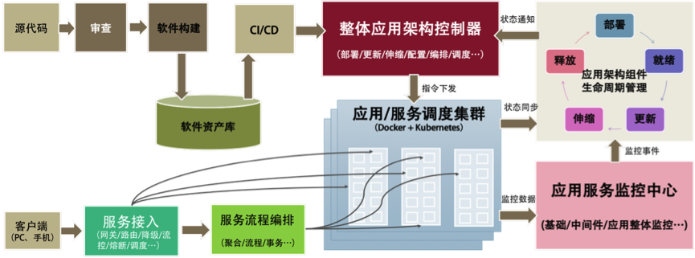

- 000 开篇词 洞悉技术的本质，享受科技的乐趣.md.html
- 001 程序员如何用技术变现（上）.md.html
- 002 程序员如何用技术变现（下）.md.html
- 003 Equifax信息泄露始末.md.html
- 004 从Equifax信息泄露看数据安全.md.html
- 005 何为技术领导力.md.html
- 006 如何拥有技术领导力.md.html
- 007 推荐阅读：每个程序员都该知道的事.md.html
- 008 Go语言，Docker和新技术.md.html
- 009 答疑解惑：渴望、热情和选择.md.html
- 010 如何成为一个大家愿意追随的Leader？.md.html
- 011 程序中的错误处理：错误返回码和异常捕捉.md.html
- 012 程序中的错误处理：异步编程和最佳实践.md.html
- 013 魔数 0x5f3759df.md.html
- 014 推荐阅读：机器学习101.md.html
- 015 时间管理：同扭曲时间的事儿抗争.md.html
- 016 时间管理：投资赚取时间.md.html
- 017 故障处理最佳实践：应对故障.md.html
- 018 故障处理最佳实践：故障改进.md.html
- 019 答疑解惑：我们应该能够识别的表象和本质.md.html
- 020 分布式系统架构的冰与火.md.html
- 021 从亚马逊的实践，谈分布式系统的难点.md.html
- 022 分布式系统的技术栈.md.html
- 023 分布式系统关键技术：全栈监控.md.html
- 024 分布式系统关键技术：服务调度.md.html
- 025 分布式系统关键技术：流量与数据调度.md.html
- 026 洞悉PaaS平台的本质.md.html
- 027 推荐阅读：分布式系统架构经典资料.md.html
- 028 编程范式游记（1）- 起源.md.html
- 029 编程范式游记（2）- 泛型编程.md.html
- 030 编程范式游记（3） - 类型系统和泛型的本质.md.html
- 031 Git协同工作流，你该怎样选.md.html
- 032 推荐阅读：分布式数据调度相关论文.md.html
- 033 编程范式游记（4）- 函数式编程.md.html
- 034 编程范式游记（5）- 修饰器模式.md.html
- 035 编程范式游记（6）- 面向对象编程.md.html
- 036 编程范式游记（7）- 基于原型的编程范式.md.html
- 037 编程范式游记（8）- Go 语言的委托模式.md.html
- 038 编程范式游记（9）- 编程的本质.md.html
- 039 编程范式游记（10）- 逻辑编程范式.md.html
- 040 编程范式游记（11）- 程序世界里的编程范式.md.html
- 041 弹力设计篇之“认识故障和弹力设计”.md.html
- 042 弹力设计篇之“隔离设计”.md.html
- 043 弹力设计篇之“异步通讯设计”.md.html
- 044 弹力设计篇之“幂等性设计”.md.html
- 045 弹力设计篇之“服务的状态”.md.html
- 046 弹力设计篇之“补偿事务”.md.html
- 047 弹力设计篇之“重试设计”.md.html
- 048 弹力设计篇之“熔断设计”.md.html
- 049 弹力设计篇之“限流设计”.md.html
- 050 弹力设计篇之“降级设计”.md.html
- 051 弹力设计篇之“弹力设计总结”.md.html
- 052 区块链技术 - 区块链的革命性及技术概要.md.html
- 053 区块链技术 - 区块链技术细节 - 哈希算法.md.html
- 054 区块链技术 - 区块链技术细节 - 加密和挖矿.md.html
- 055 区块链技术 - 去中心化的共识机制.md.html
- 056 区块链技术 - 智能合约.md.html
- 057 区块链技术 - 传统金融和虚拟货币.md.html
- 058 管理设计篇之分布式锁.md.html
- 059 管理设计篇之配置中心.md.html
- 060 管理设计篇之边车模式.md.html
- 061 管理设计篇之服务网格.md.html
- 062 管理设计篇之网关模式.md.html
- 063 管理设计篇之部署升级策略.md.html
- 064 性能设计篇之缓存.md.html
- 065 性能设计篇之异步处理.md.html
- 066 性能设计篇之数据库扩展.md.html
- 067 性能设计篇之秒杀.md.html
- 068 性能设计篇之边缘计算.md.html
- 069 程序员练级攻略（2018）：开篇词.md.html
- 070 程序员练级攻略（2018）：零基础启蒙.md.html
- 071 程序员练级攻略（2018）：正式入门.md.html
- 072 程序员练级攻略（2018）：程序员修养.md.html
- 073 程序员练级攻略（2018）：编程语言.md.html
- 074 程序员练级攻略：理论学科.md.html
- 075 程序员练级攻略（2018）：系统知识.md.html
- 076 程序员练级攻略（2018）：软件设计.md.html
- 077 程序员练级攻略（2018）：Linux系统、内存和网络.md.html
- 078 程序员练级攻略（2018）：异步IO模型和Lock-Free编程.md.html
- 079 程序员练级攻略（2018）：Java底层知识.md.html
- 080 程序员练级攻略（2018）：数据库.md.html
- 081 程序员练级攻略（2018）：分布式架构入门.md.html
- 082 程序员练级攻略（2018）：分布式架构经典图书和论文.md.html
- 083 程序员练级攻略（2018）：分布式架构工程设计.md.html
- 084 程序员练级攻略（2018）：微服务.md.html
- 085 程序员练级攻略（2018）：容器化和自动化运维.md.html
- 086 程序员练级攻略（2018）：机器学习和人工智能.md.html
- 087 程序员练级攻略（2018）：前端基础和底层原理.md.html
- 088 程序员练级攻略（2018）：前端性能优化和框架.md.html
- 089 程序员练级攻略（2018）：UIUX设计.md.html
- 090 程序员练级攻略（2018）：技术资源集散地.md.html
- 091 程序员面试攻略：面试前的准备.md.html
- 092 程序员面试攻略：面试中的技巧.md.html
- 093 程序员面试攻略：面试风格.md.html
- 094 程序员面试攻略：实力才是王中王.md.html
- 095 高效学习：端正学习态度.md.html
- 096 高效学习：源头、原理和知识地图.md.html
- 097 高效学习：深度，归纳和坚持实践.md.html
- 098 高效学习：如何学习和阅读代码.md.html
- 099 高效学习：面对枯燥和量大的知识.md.html
- 100 高效沟通：Talk和Code同等重要.md.html
- 101 高效沟通：沟通阻碍和应对方法.md.html
- 102 高效沟通：沟通方式及技巧.md.html
- 103 高效沟通：沟通技术.md.html
- 104 高效沟通：好老板要善于提问.md.html
- 105 高效沟通：好好说话的艺术.md.html
- 106 加餐 谈谈我的“三观”.md.html
- 107 结束语 业精于勤，行成于思.md.html
026 洞悉PaaS平台的本质
在了解了前面几篇文章中提的这些问题以后，我们需要思考一下该怎样解决这些问题。为了解决这些问题，请先让我来谈谈软件工程的本质。
我认为，一家商业公司的软件工程能力主要体现在三个地方。
第一，提高服务的 SLA。
所谓服务的 SLA，也就是我们能提供多少个 9 的系统可用性，而每提高一个 9 的可用性都是对整个系统架构的重新洗礼。而提高系统的 SLA 主要表现在两个方面：
- 高可用的系统；
- 自动化的运维。
你可以看一下我在 CoolShell 上写的《关于高可用系统》，这篇文章主要讲了构建高可用的系统需要使用分布式系统设计思路。然而这还不够，还需要一个高度自动化的运维和管理系统，因为故障是常态，如果没有自动化的故障恢复，很难提高服务的 SLA。
第二，能力和资源重用或复用。
软件工程还有一个重要的能力是让能力和资源可以重用。其主要表现在如下两个方面：
- 软件模块的重用；
- 软件运行环境和资源的重用。
为此，需要我们有两个重要的能力：一个是“软件抽象的能力”，另一个是“软件标准化的能力”。你可以认为软件抽象就是找出通用的软件模块或服务，软件标准化就是使用统一的软件通讯协议、统一的开发和运维管理方法……这样能让整体软件开发运维的能力和资源得到最大程度的复用，从而增加效率。
第三，过程的自动化。
编程本来就是把一个重复的工作自动化的过程，所以，软件工程的第三个本质就是把软件生产和运维的过程自动化起来。也就是下面这两个方面：
- 软件生产流水线；
- 软件运维自动化。
为此，我们除了需要 CI/CD 的 DevOps 式的自动化，也需要能够对正在运行的生产环境中的软件进行自动化运维。
通过了解软件工程的这三个本质，你会发现，我们上面所说的那些分布式的技术点是高度一致的，也就是下面这三个方面的能力。（是的，世界就是这样的。当参透了本质之后，你会发现世界是大同的。）
- 分布式多层的系统架构。
- 服务化的能力供应。
- 自动化的运维能力。
只有做到了这些，我们才能够真正拥有云计算的威力。这就是所谓的 Cloud Native。而这些目标都完美地体现在 PaaS 平台上。
前面讲述的分布式系统关键技术和软件工程的本质，都可以在 PaaS 平台上得到完全体现。所以，需要一个 PaaS 平台把那么多的东西给串联起来。这里，我结合自己的认知给你讲一下 PaaS 相关的东西，并把前面讲过的所有东西做一个总结。
PaaS 平台的本质
一个好的 PaaS 平台应该具有分布式、服务化、自动化部署、高可用、敏捷以及分层开放的特征，并可与 IaaS 实现良好的联动。

下面这三件事是 PaaS 跟传统中间件最大的差别。
- 服务化是 PaaS 的本质。软件模块重用，服务治理，对外提供能力是 PaaS 的本质。
- 分布式是 PaaS 的根本特性。多租户隔离、高可用、服务编排是 PaaS 的基本特性。
- 自动化是 PaaS 的灵魂。自动化部署安装运维，自动化伸缩调度是 PaaS 的关键。
PaaS 平台的总体架构
从下面的图中可以看到，我用了 Docker+Kubernetes 层来做了一个“技术缓冲层”。也就是说，如果没有 Docker 和 Kubernetes，构建 PaaS 将会复杂很多。当然，如果你正在开发一个类似 PaaS 的平台，那么你会发现自己开发出来的东西会跟 Docker 和 Kubernetes 非常像。相信我，最终你还是会放弃自己的轮子而采用 Docker+Kubernetes 的。

在 Docker+Kubernetes 层之上，我们看到了两个相关的 PaaS 层。一个是 PaaS 调度层，很多人将其称为 iPaaS；另一个是 PaaS 能力层，通常被称为 aPaaS。没有 PaaS 调度层，PaaS 能力层很难被管理和运维，而没有 PaaS 能力层，PaaS 就失去了提供实际能力的业务价值。而本文更多的是在讲 PaaS 调度层上的东西。
在两个相关的 PaaS 层之上，有一个流量调度的接入模块，这也是 PaaS 中非常关键的东西。流控、路由、降级、灰度、聚合、串联等等都在这里，包括最新的 AWS Lambda Service 的小函数等也可以放在这里。这个模块应该是像 CDN 那样来部署的。
然后，在这个图的两边分别是与运营和运维相关的。运营这边主要是管理一些软件资源方面的东西（像 DockerHub 和 CMDB 的东西），以及外部接入和开放平台上的东西，这主要是对外提供能力的相关组件；而运维这边主要是对内的相关东西，主要就是 DevOps 的这套东西。
总结一下，一个完整的 PaaS 平台会包括以下几部分。
- PaaS 调度层 – 主要是 PaaS 的自动化和分布式对于高可用高性能的管理。
- PaaS 能力服务层 – 主要是 PaaS 真正提供给用户的服务和能力。
- PaaS 的流量调度 – 主要是与流量调度相关的东西，包括对高并发的管理。
- PaaS 的运营管理 – 软件资源库、软件接入、认证和开放平台门户。
- PaaS 的运维管理 – 主要是 DevOps 相关的东西。
因为我画的是一个大而全的东西，所以看上去似乎很重很复杂。实际上，其中的很多东西是可以根据自己的需求被简化和裁剪的，而且很多开源软件能帮你简化好多工作。虽然构建 PaaS 平台看上去很麻烦，但是其实并不是很复杂，不要被我吓到了。哈哈。
PaaS 平台的生产和运维
下面的图给出了一个大概的软件生产、运维和服务接入，它把之前的东西都串起来了。

从左上开始软件构建，进入软件资产库（Docker Registry+ 一些软件的定义），然后走 DevOps 的流程，通过整体架构控制器进入生产环境，生产环境通过控制器操作 Docker+Kubernetes 集群进行软件部署和生产变更。
其中，同步服务的运行状态，并通过生命周期管理来拟合状态，如图右侧部分所示。服务运行时的数据会进入到相关应用监控，应用监控中的一些监控事件会同步到生命周期管理中，再由生命周期管理器来做出决定，通过控制器来调度服务运行。当应用监控中心发现流量变化，要进行强制性伸缩时，它通过生命周期管理来通知控制系统进行伸缩。
左下是服务接入的相关组件，主要是网关服务，以及 API 聚合编排和流程处理。这对应于之前说过的流量调度和 API Gateway 的相关功能。
总结
恭喜你，已经听完了《分布式系统架构的本质》系列文章的 7 篇文章。下面，我们对这些内容做一下总结。
传统的单体架构系统容量显然是有上限的。同时，为了应对有计划和无计划的下线时间，系统的可用性也是有其极限的。分布式系统为以上两个问题提供了解决方案，并且还附带有其他优势。但是，要同时解决这两个问题决非易事。为了构建分布式系统，我们面临的主要问题如下。
- 分布式系统的硬件故障发生率更高，故障发生是常态，需要尽可能地将运维流程自动化。
- 需要良好地设计服务，避免某服务的单点故障对依赖它的其他服务造成大面积影响。
- 为了容量的可伸缩性，服务的拆分、自治和无状态变得更加重要，可能需要对老的软件逻辑做大的修改。
- 老的服务可能是异构的，此时需要让它们使用标准的协议，以便可以被调度、编排，且互相之间可以通信。
- 服务软件故障的处理也变得复杂，需要优化的流程，以加快故障的恢复。
- 为了管理各个服务的容量，让分布式系统发挥出最佳性能，需要有流量调度技术。
- 分布式存储会让事务处理变得复杂；在事务遇到故障无法被自动恢复的情况下，手动恢复流程也会变得复杂。
- 测试和查错的复杂度增大。
- 系统的吞吐量会变大，但响应时间会变长。
为了解决这些问题，我们深入了解了以下这些解决方案。
- 需要有完善的监控系统，以便对服务运行状态有全面的了解。
- 设计服务时要分析其依赖链；当非关键服务故障时，其他服务要自动降级功能，避免调用该服务。
- 重构老的软件，使其能被服务化；可以参考 SOA 和微服务的设计方式，目标是微服务化；使用 Docker 和 Kubernetes 来调度服务。
- 为老的服务编写接口逻辑来使用标准协议，或在必要时重构老的服务以使得它们有这些功能。
- 自动构建服务的依赖地图，并引入好的处理流程，让团队能以最快速度定位和恢复故障，详见《故障处理最佳实践：应对故障》一文。
- 使用一个 API Gateway，它具备服务流向控制、流量控制和管理的功能。
- 事务处理建议在存储层实现；根据业务需求，或者降级使用更简单、吞吐量更大的最终一致性方案，或者通过二阶段提交、Paxos、Raft、NWR 等方案之一，使用吞吐量小的强一致性方案。
- 通过更真实地模拟生产环境，乃至在生产环境中做灰度发布，从而增加测试强度；同时做充分的单元测试和集成测试以发现和消除缺陷；最后，在服务故障发生时，相关的多个团队同时上线自查服务状态，以最快地定位故障原因。
- 通过异步调用来减少对短响应时间的依赖；对关键服务提供专属硬件资源，并优化软件逻辑以缩短响应时间。
你已经看到，解决分布式服务的吞吐量和可用性问题不是件容易的事，以及目前的主流技术是怎么办到的。衍生出来的许多子问题，每一个都值得去细化、去研究其解决方案。这已经超出本文的篇幅所能及的了，但的确都是值得我们做技术的人去深入思考的。
在这里，我想邀请你来讨论一下，你在分布式系统的哪个领域研究得比较深？有什么独特的心得能与我们分享？期待你的留言。